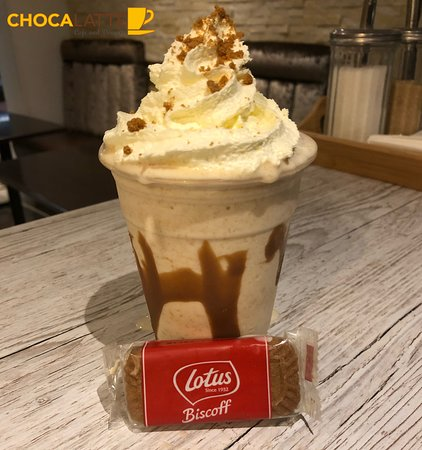

Lotus Biscoff Milkshake

Description:
This page will guide you in making a single serving of Lotus Biscoff Milkshake that is thick, rich, creamy and crumbly.
Ingredients:
- 2 lotus biscoff biscuits
- 3 tablespoons of lotus biscoff spread (a choice between smooth and crunchy is your's to make
- 2 cups of milk
- 2 tablespoons of sugar
- 3 scoops of vanilla ice cream
Steps to take:
- You will need a blender
- Take the biscuits, break them apart in your hands and place in the blender
- Pour in the milk
- Add the sugar
- Add the Biscoff spread
- Add the ice cream
- Blend for 30 seconds
- Whipped cream is optional before serving
Enjoy!